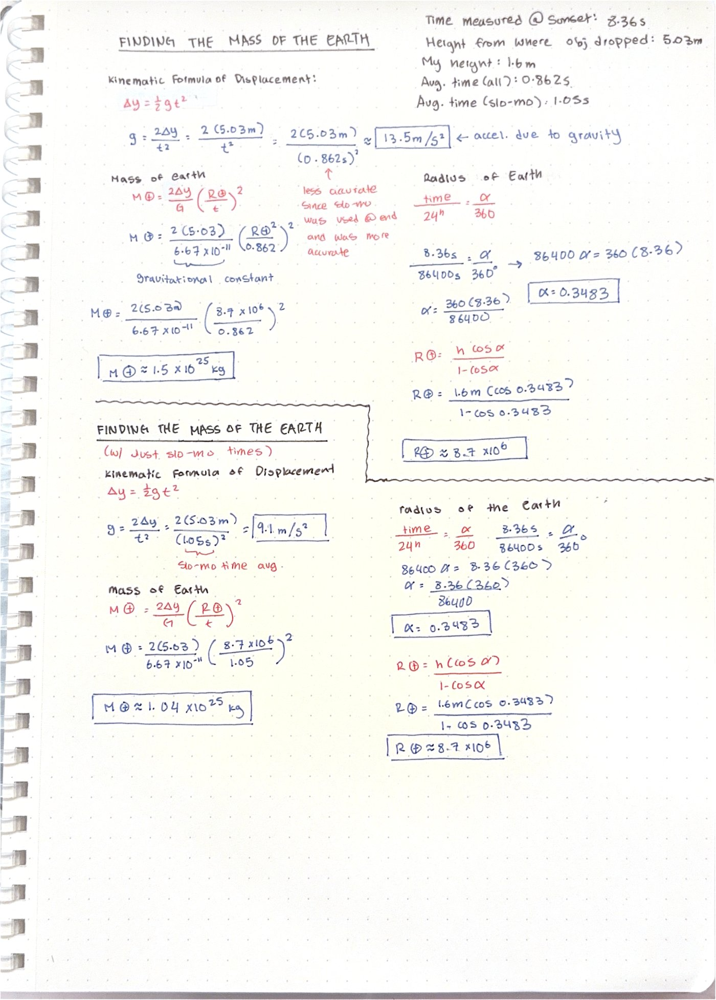
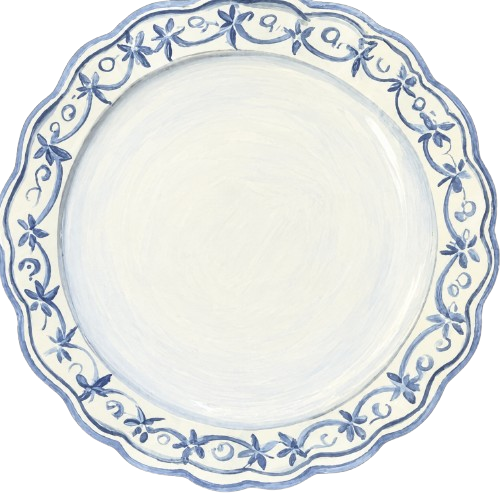

Open each course below to read the write-up — every one you order adds to the build on the right.
0/5 on your order
Question:
“Can I use indirect measurements to derive the mass and radius of the Earth from multiple freefall measurements and the sunset?”
Why it matters:
Being able to use indirect measurements to derive the mass of an object is important since it can help us measure masses that seem almost impossible to measure–like the Earth’s mass. By proving that this method works, we can use it to measure the mass of other very large objects. For example, scientists could find the mass of Mars by using measurements of its gravitational acceleration and radius without having to directly place the planet on a scale, which is impossible.
What are the underlying theories/ laws?
Newton’s Law of Universal Gravitation: F=Gm1m2r2P
Kinematic Formula of Displacement: Δx = v₀t + ½at²
to find the radius of the Earth
State a hypothesis
I predict that I will have an error within a factor of ten of the Earth’s actual mass
Materials
- Sunglasses
- Phone (for stopwatch and slo-mo videos)
- Notebook + pencil for recording
- Eraser (for dropping)
- Measure tape
Sunset Measurement:
- Lie down facing the west.
- Watch for the sun to dip just below the horizon (make sure to wear sunglasses).
- Start the stopwatch once it has just gone past the horizon line.
- Quickly stand up.
- Stop the stopwatch once the sun dips below the horizon again.
Freefall Measurement
- Find an eraser to drop, and choose a place to drop it that is at least 5m tall.
- Measure the height from which the object was dropped (in meters) using your measuring tape.
- Station a “dropper” at the top, and a “timer” at the bottom with a phone, notebook, and a writing utensil to record the times.
- The “dropper” should signal to the “timer” and then drop the eraser.
- Simultaneously, the “timer” should start the stopwatch as the “dropper” releases the eraser.
- The “timer” should then stop the stopwatch once the eraser hits the ground.
- Record the drop time.
- Repeat the drop procedure 14 more times.
– Slo-mo Method (Used for final 5 measurements) –
- The “timer” should start a slo-mo video just before the “dropper” releases the eraser
- The “timer” should stop the video just after the eraser hits the ground, ensuring that the object remains in frame throughout.
- Record the drop time.
- Repeat this procedure 4 more times, recording the measurements
- Find the average of all drop times to use in later measurements.
Measurements
Height eraser was dropped from: 5.03 m · Observer height: 1.6 m · Time measured at sunset: 8.36 s
| Stopwatch | Slo-Mo | ||
|---|---|---|---|
| 0.84 | 0.69 | 0.88 | 1.06 |
| 0.79 | 0.69 | 0.93 | 1.01 |
| 0.78 | 0.81 | 0.74 | 1.04 |
| 0.84 | 0.94 | 0.81 | 1.01 |
| 0.63 | 0.78 | 0.84 | 1.13 |
Average (all) = (all times)/20 = 0.862s
Average (slo-mo) = 1.05s

What went wrong:
- My group and I switched methods partway through, using a stopwatch for the first 15 drops and then switching to slo-mo for the last 5, since slo-mo helped remove the possibility of a reaction time error, and was therefore more reliable. Using the stopwatch made our combined average (stopwatch + slo-mo time points) 0.862 seconds less accurate than just the slo-mo average 1.05 seconds; Using these data points to find the gravitational acceleration gave us 13.5 m/s^2 (all time points used) and 9.1m/s^2 (only slo-mo timepoints used), with the latter being much closer to the actual gravitational acceleration of the Earth:
- I also believe that I also made an error when I was timing watching the sunset to capture the amount of time it took for it to fully set while standing up after crouching down. I believe this since I had a couple of trees and houses blocking my view of a perfect sunset, which could’ve thrown off my timing. Since I only took one data point of this occurrence, there is a lot of room for mis-measurements and error as well.
- My group and I made an error when measuring the height from where we dropped the eraser to where the eraser hit the ground, so we had to use another group’s data that dropped their item from the same stairwell. This could be a contention since the other group could’ve dropped their item from a different height point, and they could’ve made some errors when measuring the height.
How to fix it:
- To fix these possible points of errors, the next time that we do this lab I would use slo-mo to time the eraser drop, instead of switching methods. I would also make sure that we get multiple measures of the height from where we dropped the eraser to make sure that we wouldn’t have to rely on another team’s data. I would also get at least two data points for my timing for the sunset.
Percentage of error:
- %Error = Vcalc- VexpVexp
- Our percentage of error in this lab (using all time points) is: 1.5 x 1025kg-5.97 x 1024kg5.97 x 1024kgx 100 = 151% error
- Our percentage of error in this lab (using just slo-mo time points) is:
- 1.04 x 1025kg-5.97 x 1024kg5.97 x 1024kgx 100 = 74.2% error
Do your results make sense?
I would say that my results make sense are relatively accurate, as the actual mass of the Earth is 5.97x10^24 kg, while my results for my (all time) trial was 1.5 x 10^25 kg, and the results of my (slo-mo) was 1.04 x 10^25 kg, a factor of 2.5 and 1.7 off, respectively.
Is your hypothesis confirmed?
My hypothesis is confirmed as my results are within a margin of 10 off of the actual mass of the Earth in kilograms. I got the Earth’s mass to be 1.5 x 10^25kg and 1.04 x 10^24kg, around 2.5 and 1.7 times the actual mass of the Earth, whose mass is 5.97x10^24kg, which are well within the factor of ten margin that I allotted to myself in my hypothesis.
Outside Sources: Liv’s group from B-block provided us with the measurement of the stairwell since our data was incorrect
